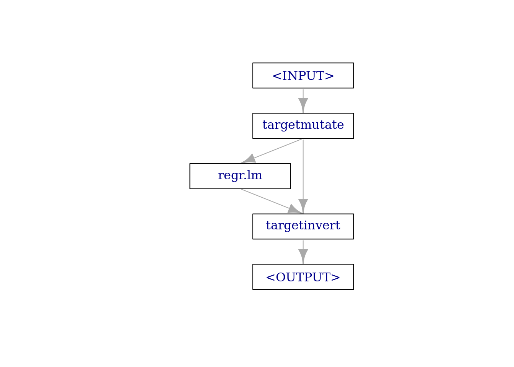
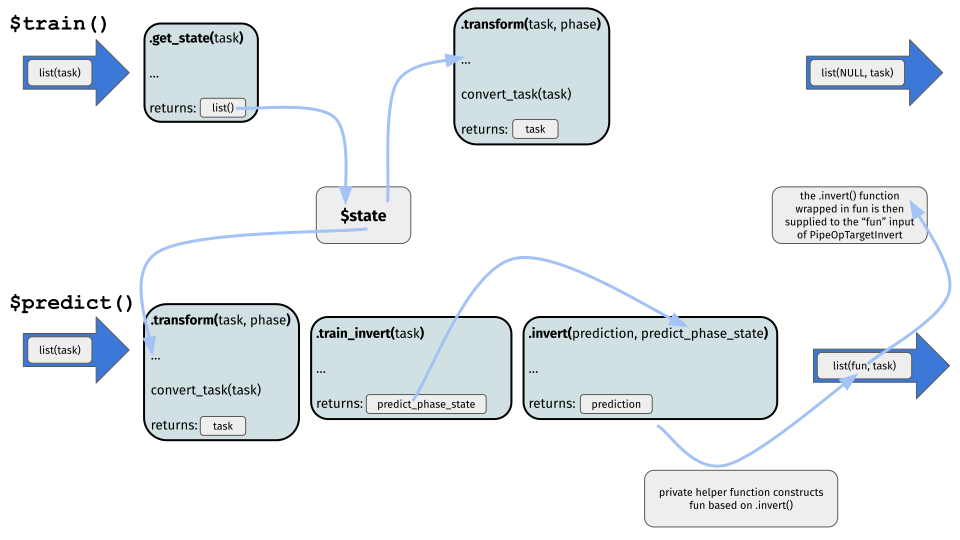
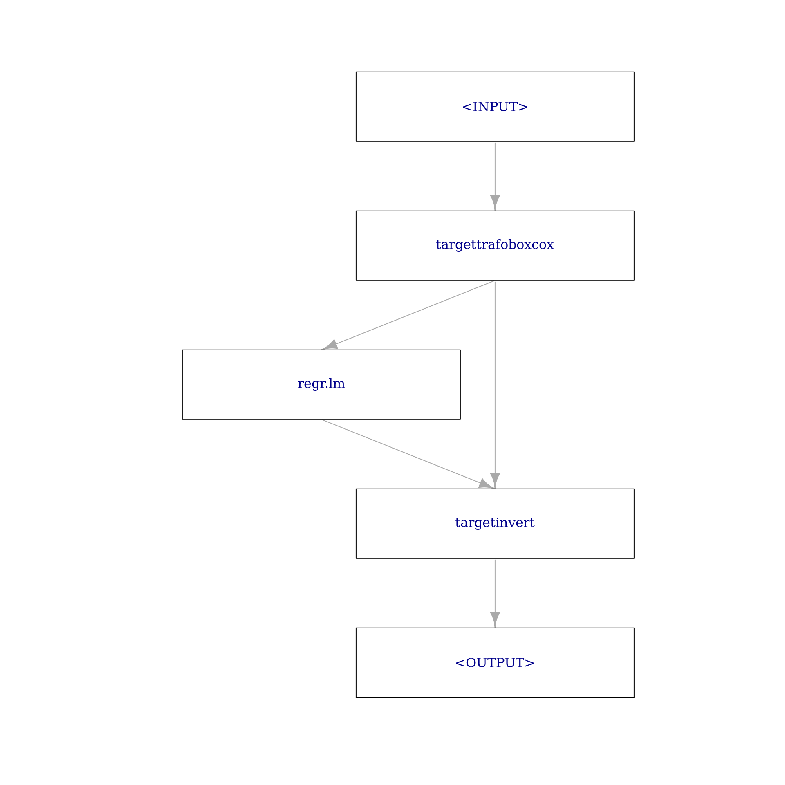

library(mlr3)
library(mlr3learners)
library(mlr3pipelines)
library(paradox)Transforming the target variable often can lead to predictive improvement and is a widely used tool. Typical transformations are for example the \(\log\) transformation of the target aiming at minimizing (right) skewness, or the Box Cox and Yeo-Johnson transformations being more flexible but having a similar goal.
One option to perform, e.g., a \(\log\) transformation would be to manually transform the target prior to training a Learner (and also predicting from it) and then manually invert this transformation via \(\exp\) after predicting from the Learner. This is quite cumbersome, especially if a transformation and inverse transformation require information about both the training and prediction data.
In this post, we show how to do various kinds of target transformations using mlr3pipelines and explain the design of the target transformation and inversion PipeOps.
You will:
learn how to do simple target transformations using
PipeOpTargetMutatebe introduced to the abstract base class to implement custom target transformations,
PipeOpTargetTrafoimplement a custom target transformation PipeOp,
PipeOpTargetTrafoBoxCox
As a prerequisite, you should be quite familiar with mlr3pipelines, i.e, know about the $state field of PipeOps, input and output channels, as well as Graphs. We will start with a PipeOp for simple target transformations, PipeOpTargetMutate.
We load the most important packages for this example.
We initialize the random number generator with a fixed seed for reproducibility, and decrease the verbosity of the logger to keep the output clearly represented.
set.seed(7832)
lgr::get_logger("mlr3")$set_threshold("warn")In all sections we will use the mtcars regression task with mpg being a numerical, positive target:
task = tsk("mtcars")
summary(task$data(cols = task$target_names)) mpg
Min. :10.40
1st Qu.:15.43
Median :19.20
Mean :20.09
3rd Qu.:22.80
Max. :33.90 Moreover, as a Learner we will use an ordinary linear regression learner:
learner_lm = lrn("regr.lm")Simple Target Transformations
The term simple refers to transformations that are given by a function of the target, relying on no other arguments (constants are of course allowed). The most prominent example is given by the \(\log\) transformation which we can later invert by applying the \(\exp\) transformation.
If you are only interested in doing such a transformation and you do not have the time to read more of this post, simply use the following syntactic sugar:
g_ppl = ppl("targettrafo", graph = learner_lm)
g_ppl$param_set$values$targetmutate.trafo = function(x) log(x)
g_ppl$param_set$values$targetmutate.inverter = function(x) list(response = exp(x$response))This constructs a Graph that will \(\log\) transform the target prior to training the linear regression learner (or predicting from it) and \(\exp\) transform the target after predicting from it. Note that you can supply any other Learner or even a whole Graph as the graph argument.
Now, we will go into more detail about how this actually works:
We can perform a \(\log\) transformation of our numerical, positive target, mpg, using PipeOpTargetMutate (by default, ppl("targettrafo") uses this target transformation PipeOp):
trafo = po("targetmutate", param_vals = list(trafo = function(x) log(x)))We have to specify the trafo parameter as a function of x (which will internally be evaluated to be the target of the Task): trafo = function(x) log(x)). In principle, this is all that is needed to transform the target prior to training a Learner (or predicting from it), i.e., if we now train this PipeOp, we see that the target is transformed as specified:
trafo$train(list(task))$output$data(cols = task$target_names) mpg
1: 3.044522
2: 3.044522
3: 3.126761
4: 3.063391
5: 2.928524
6: 2.895912
7: 2.660260
8: 3.194583
9: 3.126761
10: 2.954910
11: 2.879198
12: 2.797281
13: 2.850707
14: 2.721295
15: 2.341806
16: 2.341806
17: 2.687847
18: 3.478158
19: 3.414443
20: 3.523415
21: 3.068053
22: 2.740840
23: 2.721295
24: 2.587764
25: 2.954910
26: 3.306887
27: 3.258097
28: 3.414443
29: 2.760010
30: 2.980619
31: 2.708050
32: 3.063391
mpgAfter having predicted from the Learner we could then proceed to apply the inverse transformation function in a similar manner. However, in mlr3pipelines, we decided to go with a more unified design of handling target transformations. In all target transformation PipeOps also the inverse transformation function of the target has to be specified. Therefore, in PipeOpTargetMutate, the parameter inverter also has to be correctly specified:
trafo$param_set$values$inverter = function(x) list(response = exp(x$response))Internally, this function will be applied to the data.table downstream of a Prediction object without the $row_id and $truth columns, and we specify that the $response column should be transformed. Note that applying the inverse transformation will typically only be done to the $response column, because transforming standard errors or probabilities is often not straightforward.
To actually carry out the inverse transformation function after predicting from the Learner, we then rely on PipeOpTargetInvert. PipeOpTargetInvert has an empty ParamSet and its sole purpose is to apply the inverse transformation function after having predicted from a Learner (note that this whole design of target transformations may seem somewhat over-engineered at first glance, however, we will learn of its advantages when we later move to the advanced section).
PipeOpTargetInvert has two input channels named "fun" and "prediction". During training, both take NULL as input (because this is what a Learner’s "output" output and PipeOpTargetMutate’s "fun" output will return during training). During prediction, the "prediction" input takes a Prediction, and the "fun" input takes the "fun" output from PipeOpTargetMutate (you may have noticed already, that PipeOpTargetMutate has actually two outputs, "fun" and "output", with "fun" returning NULL during training and a function during prediction, while "output" always returns the transformed input Task). We can see this, if we look at:
trafo$output name train predict
1: fun NULL function
2: output Task Tasktrafo$predict(list(task))$fun
function(inputs) {
assert_list(inputs, len = 1L, types = "Prediction")
list(private$.invert(inputs[[1L]], predict_phase_state))
}
<bytecode: 0x555be761be00>
<environment: 0x555be76215b0>
$output
<TaskRegr:mtcars> (32 x 11): Motor Trends
* Target: mpg
* Properties: -
* Features (10):
- dbl (10): am, carb, cyl, disp, drat, gear, hp, qsec, vs, wtWe will talk more about such technical details in the advanced section. For now, to finally construct our target transformation pipeline, we build a Graph:
g = Graph$new()
g$add_pipeop(trafo)
g$add_pipeop(learner_lm)
g$add_pipeop(po("targetinvert"))Manually connecting the edges is quite cumbersome. First we connect the "output" output of "targetmutate" to the "input" input of "regr.lm":
g$add_edge(src_id = "targetmutate", dst_id = "regr.lm",
src_channel = 2, dst_channel = 1)Then we connect the "output" output of "regr.lm" to the "prediction" input of "targetinvert":
g$add_edge(src_id = "regr.lm", dst_id = "targetinvert",
src_channel = 1, dst_channel = 2)Finally, we connect the "fun" output of "targetmutate" to the "fun" input of "targetinvert":
g$add_edge(src_id = "targetmutate", dst_id = "targetinvert",
src_channel = 1, dst_channel = 1)This graph (which is conceptually the same graph as constructed via the ppl("targettrafo") syntactic sugar above) looks like the following:
g$plot(html = FALSE)
We can then finally call $train() and $predict() (prior to this we wrap the Graph in a GraphLearner):
gl = GraphLearner$new(g)
gl$train(task)
gl$state$model
$model$targetmutate
list()
$model$regr.lm
$model$regr.lm$model
Call:
stats::lm(formula = task$formula(), data = task$data())
Coefficients:
(Intercept) am carb cyl disp drat gear hp qsec
2.776e+00 4.738e-02 -2.012e-02 7.657e-03 4.989e-05 2.220e-02 5.925e-02 -8.964e-04 3.077e-02
vs wt
-2.874e-03 -1.723e-01
$model$regr.lm$log
Empty data.table (0 rows and 3 cols): stage,class,msg
$model$regr.lm$train_time
[1] 0.012
$model$regr.lm$param_vals
named list()
$model$regr.lm$task_hash
[1] "6ca8c90cdf732078"
$model$regr.lm$data_prototype
Empty data.table (0 rows and 11 cols): mpg,am,carb,cyl,disp,drat...
$model$regr.lm$task_prototype
Empty data.table (0 rows and 11 cols): mpg,am,carb,cyl,disp,drat...
$model$regr.lm$mlr3_version
[1] '0.16.1'
$model$regr.lm$train_task
<TaskRegr:mtcars> (32 x 11): Motor Trends
* Target: mpg
* Properties: -
* Features (10):
- dbl (10): am, carb, cyl, disp, drat, gear, hp, qsec, vs, wt
$model$targetinvert
list()
$log
Empty data.table (0 rows and 3 cols): stage,class,msg
$train_time
[1] 0.098
$param_vals
$param_vals$targetmutate.trafo
function(x) log(x)
<bytecode: 0x555be6fb60f0>
$param_vals$targetmutate.inverter
function(x) list(response = exp(x$response))
$task_hash
[1] "58a137d2055e8406"
$data_prototype
Empty data.table (0 rows and 11 cols): mpg,am,carb,cyl,disp,drat...
$task_prototype
Empty data.table (0 rows and 11 cols): mpg,am,carb,cyl,disp,drat...
$mlr3_version
[1] '0.16.1'
$train_task
<TaskRegr:mtcars> (32 x 11): Motor Trends
* Target: mpg
* Properties: -
* Features (10):
- dbl (10): am, carb, cyl, disp, drat, gear, hp, qsec, vs, wtgl$predict(task)<PredictionRegr> for 32 observations:
row_ids truth response
1 21.0 21.67976
2 21.0 21.10831
3 22.8 25.73690
---
30 19.7 19.58533
31 15.0 14.11015
32 21.4 23.11105and contrast this with $train() and $predict() of the naive linear regression learner (also look at the estimated coefficients of the linear regression contained in $state$model):
learner_lm$train(task)
learner_lm$state$model
Call:
stats::lm(formula = task$formula(), data = task$data())
Coefficients:
(Intercept) am carb cyl disp drat gear hp qsec
12.30337 2.52023 -0.19942 -0.11144 0.01334 0.78711 0.65541 -0.02148 0.82104
vs wt
0.31776 -3.71530
$log
Empty data.table (0 rows and 3 cols): stage,class,msg
$train_time
[1] 0.004
$param_vals
named list()
$task_hash
[1] "58a137d2055e8406"
$data_prototype
Empty data.table (0 rows and 11 cols): mpg,am,carb,cyl,disp,drat...
$task_prototype
Empty data.table (0 rows and 11 cols): mpg,am,carb,cyl,disp,drat...
$mlr3_version
[1] '0.16.1'
$train_task
<TaskRegr:mtcars> (32 x 11): Motor Trends
* Target: mpg
* Properties: -
* Features (10):
- dbl (10): am, carb, cyl, disp, drat, gear, hp, qsec, vs, wtlearner_lm$predict(task)<PredictionRegr> for 32 observations:
row_ids truth response
1 21.0 22.59951
2 21.0 22.11189
3 22.8 26.25064
---
30 19.7 19.69383
31 15.0 13.94112
32 21.4 24.36827You should continue reading, if you are interested in more advanced target transformations, i.e., where the transformation and inverse transformation require information about both the training and prediction data.
First we will introduce the abstract base class for doing target transformations, PipeOpTargetTrafo, from which PipeOpTargetMutate inherits.
Abstract Base Class: PipeOpTargetTrafo
No matter how “complicated” the actual target transformation and inverse transformation may be, applying the inverse transformation function after having predicted from a Learner will always be done via PipeOpTargetInvert (as already outlined above, PipeOpTargetInvert has an empty ParamSet and its sole purpose is to apply the inverse transformation function after having predicted from a Learner). All Graphs for doing target transformations will therefore look similar like the simple one above, i.e., a target transformation PipeOp followed by some Learner or a whole Graph, followed by PipeOpTargetInvert. Therefore, using ppl("targettrafo") to construct such Graphs is highly recommended.
To allow for more advanced target transformations, we now have a closer look at the abstract base class, PipeOpTargetTrafo:
PipeOpTargetTrafo has one input channel, named "input" taking a Task both during training and prediction. It’s two output channels are named "fun" and "output". During training "fun" returns NULL and during prediction "fun" returns a function that will be used by PipeOpTargetInvert to perform the inverse target transformation on PipeOpTargetInvert’s "prediction" input. "output" returns the modified input Task both during training and prediction.
Subclasses can overload up to four functions:
.get_state()takes the inputTaskand returns alist()which will internally be used to set the$state. Typically it is sensible to make use of the$stateduring.transform()and.train_invert(). The base implementation returnslist()and should be overloaded if setting the state is desired..transform()takes the inputTaskand returns a modifiedTask(i.e., theTaskwith the transformed target). This is the main function for doing the actual target transformation. Note that.get_state()is evaluated a single time during training right before.transform()and therefore, you can rely on the$statethat has been set. To update the inputTaskwith respect to the transformed target, subclasses should make use of theconvert_task()function and drop the original target from theTask..transform()also accepts aphaseargument that will receive"train"during training and"predict"during prediction. This can be used to enable different behavior during training and prediction..transform()should always be overloaded by subclasses..train_invert()takes the inputTaskand returns apredict_phase_stateobject. This can be anything. Note that.train_invert()should not modify the inputTask. The base implementation returns a list with a single argument, the$truthcolumn of the inputTaskand should be overloaded if a more training-phase-dependent state is desired..invert()takes aPredictionand apredict_phase_stateobject as inputs and returns aPrediction. This is the main function for specifying the actual inverse target transformation that will later be carried out byPipeOpTargetInvert. Internally a private helper function ,.invert_help()will construct the function that will be returned by the"fun"output ofPipeOpTargetTrafoso thatPipeOpTargetInvertcan later simply dispatch this inverse target transformation on its"prediction"input.
The supposed workflow of a class inherited from PipeOpTargetTrafo is given in the following figure:

To solidify our understanding we will design a new target transformation PipeOp in the next section: PipeOpTargetTrafoBoxCox
Hands on: PipeOpTargetTrafoBoxCox
library(R6)The Box-Cox transformation of a target \(y_{i}\) is given as:
\[y_{i}(\lambda) = \begin{cases} \frac{y_{i}^{\lambda} - 1}{\lambda} & \text{if}~\lambda \neq 0; \\ \log(y_{i}) & \text{if}~\lambda = 0 \end{cases}\]
mlr3pipelines already supports the Box-Cox transformation for numerical, positive features, see ?PipeOpBoxCox.
Here we will design a PipeOp to apply the Box-Cox transformation as a target transformation. The \(\lambda\) parameter of the transformation is estimated during training and used for both the training and prediction transformation. After predicting from a Learner we will as always apply the inverse transformation function. To do the actual transformation we will use bestNormalize::boxcox().
First, we inherit from PipeOpTargetTrafo and overload the initialize() function:
PipeOpTargetTrafoBoxCox = R6Class("PipeOpTargetTrafoBoxCox",
inherit = PipeOpTargetTrafo,
public = list(
initialize = function(id = "targettrafoboxcox", param_vals = list()) {
param_set = ps(
standardize = p_lgl(default = TRUE, tags = c("train", "boxcox")),
eps = p_dbl(default = 0.001, lower = 0, tags = c("train", "boxcox")),
lower = p_dbl(default = -1L, tags = c("train", "boxcox")),
upper = p_dbl(default = 2L, tags = c("train", "boxcox"))
)
super$initialize(id = id, param_set = param_set, param_vals = param_vals,
packages = "bestNormalize", task_type_in = "TaskRegr",
task_type_out = "TaskRegr")
}
),
private = list(
.get_state = function(task) {
...
},
.transform = function(task, phase) {
...
},
.train_invert = function(task) {
...
},
.invert = function(prediction, predict_phase_state) {
...
}
)
)As parameters, we allow "standardize" (whether to center and scale the transformed values to attempt a standard normal distribution), "eps" (tolerance parameter to identify if the \(\lambda\) parameter is equal to zero), "lower" (lower value for the estimation of the \(\lambda\) parameter) and "upper" (upper value for the estimation of the \(\lambda\) parameter). Note that we set task_type_in = "TaskRegr" and task_type_out = "TaskRegr" to specify that this PipeOp only works for regression Tasks.
Second, we overload the four functions as mentioned above.
We start with .get_state(). We extract the target and apply the Box-Cox transformation to the target. This yields an object of class "boxcox" which we will wrap in a list() and set as the $state (bc$x.t = NULL and bc$x = NULL is done to save some memory because we do not need the transformed original data and original data later):
.get_state = function(task) {
target = task$data(cols = task$target_names)[[1L]]
bc = mlr3misc::invoke(bestNormalize::boxcox, target,
.args = self$param_set$get_values(tags = "boxcox"))
bc$x.t = NULL
bc$x = NULL
list(bc = bc)
},Next, we tackle .transform(). This is quite straightforward, because objects of class "boxcox" have their own predict method which we can use here to carry out the actual Box-Cox transformation based on the learned \(\lambda\) parameter as stored in the "boxcox" object in the $state (both during training and prediction). We then rename the target, add it to the task and finally update the task with respect to this new target:
.transform = function(task, phase) {
target = task$data(cols = task$target_names)[[1L]]
new_target = as.data.table(predict(self$state$bc, newdata = target))
colnames(new_target) = paste0(task$target_names, ".bc")
task$cbind(new_target)
convert_task(task, target = colnames(new_target),
drop_original_target = TRUE)
},Time to overload .train_invert(). This is even more straightforward, because the prediction method for objects of class "boxcox" directly allows for inverting the transformation via setting the argument inverse = TRUE. Therefore, we only need the "boxcox" object stored in the $state along the $truth column of the input Task (remember that this list will later be available as the predict_phase_state object):
.train_invert = function(task) {
list(truth = task$truth(), bc = self$state$bc)
},Finally, we overload .invert(). We extract the truth from the predict_phase_state and the response from the Prediction. We then apply the inverse Box-Cox transformation to the response based on the \(\lambda\) parameter and the mean and standard deviation learned during training, relying on the predict_phase_state object. Finally, we construct a new Prediction object:
.invert = function(prediction, predict_phase_state) {
truth = predict_phase_state$truth
response = predict(predict_phase_state$bc, newdata = prediction$response,
inverse = TRUE)
PredictionRegr$new(row_ids = prediction$row_ids, truth = truth,
response = response)
}Note that this PipeOp is ill-equipped to handle the case of predict_type = "se", i.e., we always only return a response prediction (as outlined above, this is the case for most target transformations, because transforming standard errors or probabilities of a prediction is often not straightforward). We could of course check whether the predict_type is set to "se" and if this is the case, return NA as the standard errors.
To construct our final target transformation Graph with our linear regression learner, we again simply make use of ppl("targettrafo"):
g_bc = ppl("targettrafo", graph = learner_lm,
trafo_pipeop = PipeOpTargetTrafoBoxCox$new())The following plot should already look quite familiar:
g_bc$plot(html = FALSE)
Finally we $train() and $predict() on the task (again, we wrap the Graph in a GraphLearner):
gl_bc = GraphLearner$new(g_bc)
gl_bc$train(task)
gl_bc$state$model
$model$regr.lm
$model$regr.lm$model
Call:
stats::lm(formula = task$formula(), data = task$data())
Coefficients:
(Intercept) am carb cyl disp drat gear hp qsec
-0.6272999 0.1670950 -0.0663126 0.0237529 0.0002376 0.0759944 0.1963335 -0.0030367 0.1043210
vs wt
-0.0080166 -0.5800635
$model$regr.lm$log
Empty data.table (0 rows and 3 cols): stage,class,msg
$model$regr.lm$train_time
[1] 0.007
$model$regr.lm$param_vals
named list()
$model$regr.lm$task_hash
[1] "612ab4e0ad596159"
$model$regr.lm$data_prototype
Empty data.table (0 rows and 11 cols): mpg.bc,am,carb,cyl,disp,drat...
$model$regr.lm$task_prototype
Empty data.table (0 rows and 11 cols): mpg.bc,am,carb,cyl,disp,drat...
$model$regr.lm$mlr3_version
[1] '0.16.1'
$model$regr.lm$train_task
<TaskRegr:mtcars> (32 x 11): Motor Trends
* Target: mpg.bc
* Properties: -
* Features (10):
- dbl (10): am, carb, cyl, disp, drat, gear, hp, qsec, vs, wt
$model$targettrafoboxcox
$model$targettrafoboxcox$bc
Standardized Box Cox Transformation with 32 nonmissing obs.:
Estimated statistics:
- lambda = 0.02955701
- mean (before standardization) = 3.092016
- sd (before standardization) = 0.324959
$model$targetinvert
list()
$log
Empty data.table (0 rows and 3 cols): stage,class,msg
$train_time
[1] 0.075
$param_vals
named list()
$task_hash
[1] "58a137d2055e8406"
$data_prototype
Empty data.table (0 rows and 11 cols): mpg,am,carb,cyl,disp,drat...
$task_prototype
Empty data.table (0 rows and 11 cols): mpg,am,carb,cyl,disp,drat...
$mlr3_version
[1] '0.16.1'
$train_task
<TaskRegr:mtcars> (32 x 11): Motor Trends
* Target: mpg
* Properties: -
* Features (10):
- dbl (10): am, carb, cyl, disp, drat, gear, hp, qsec, vs, wtgl_bc$predict(task)<PredictionRegr> for 32 observations:
row_ids truth response
1 21.0 21.70854
2 21.0 21.13946
3 22.8 25.75242
---
30 19.7 19.58934
31 15.0 14.10658
32 21.4 23.15263We could now proceed to benchmark our different target transformations:
bg = benchmark_grid(list(task), learners = list(learner_lm, gl, gl_bc),
resamplings = list(rsmp("cv", folds = 10)))
bmr = benchmark(bg)bmr$aggregate(msr("regr.mse")) nr task_id learner_id resampling_id iters regr.mse
1: 1 mtcars regr.lm cv 10 11.866071
2: 2 mtcars targetmutate.regr.lm.targetinvert cv 10 7.793303
3: 3 mtcars targettrafoboxcox.regr.lm.targetinvert cv 10 8.230192
Hidden columns: resample_result